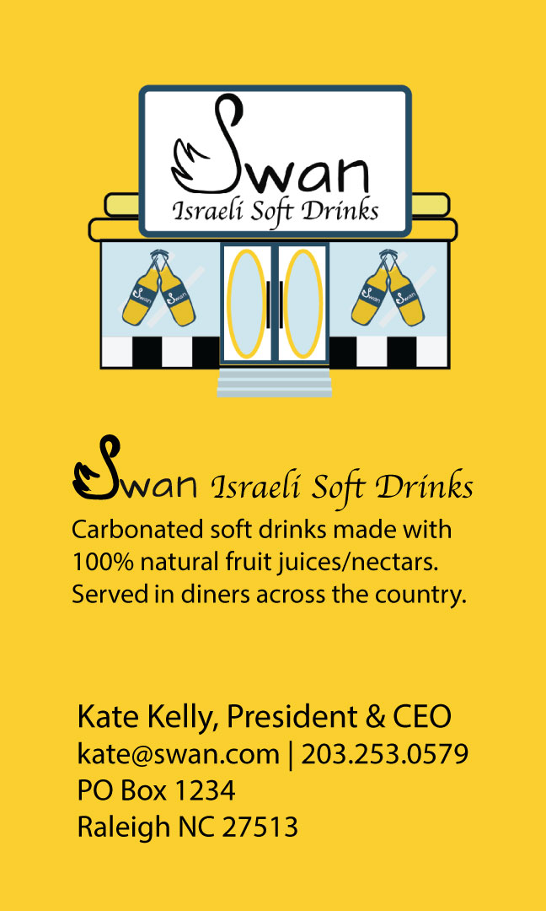

Kate Kelly
Virtual Assistant
Kate Kelly is an over-caffeinated, extremely creative, work from home freelance graphic designer and virtual assistant.
For over 16 years Kate has been working with clients from all over the world as a virtual assistant, designing graphics, creating and customizing websites, editing photos and video/audio files, as well as managing social media accounts, coordinating contact lists, producing and scheduling e-zines/newsletters and contact lists, managing calendars, and scheduling/confirming travel arrangements.
Featured Projects
View selected projects below. More projects can be found at ExecAssist Portfolio.
Fancy Restaurant Group SmartPhone App
.png)
This project assignment was to create a prototype smartphone app using Figma. My goal was to create a restaurant reservation app that allowed users to make reservations easily from their smartphone or other device. It eliminates the need for phone calls and allows users to book tables at their preferred restaurants at their convenience.
My design concept was to make something super simple to use to create reservations to three fictitious fancy restaurants in Raleigh.
View prototypeSwan Israeli Soft Drinks
This project assignment was to create a logo and some marketing materials for the fictitious business Swan Israeli Soft Drinks.
I used Illustrator to create the swan-shaped S, the diner, and soda bottles for the logo.
Work Experience
Virtual Assistant
ExecAssist, LLC
2007 to present
Tasks include graphic design, managing social media, creating and customizing websites, photo/video/audio editing, coordinating contact lists, creating and scheduling e-zines/newsletters, managing calendars, and creating/confirming travel arrangements.
Office Manager/Virtual Assistant
Dialogue Resource LLC
2005-2012
Tasks included general administrative responsibilities, creating proposals, presentations, and reports, event planning, bookkeeping (invoicing clients, processing checks & bills received), maintaining contact lists, transcribing research group audios/videos, updating scripts for market research groups, processing results and reporting statistics, creating and customizing a new website, photo/video/audio editing, managing calendars, coordinating meetings at research facilities/hotels, and creating/confirming travel arrangements. As well as personal assistant duties as needed.
Administrative Assistant & Marketing Director
Citizens for Patients’ Rights
2003-2005
Tasks included general administrative responsibilities, creating grant proposals, applying and receiving 501(c)(3) status, graphic design, event planning, photography and photo editing, coordinating meetings, attending medical and health related conferences, coordinating and scheduling board meetings.
Education
Wake Technical Community College - June 2022 to present
Advertising & Graphic Design
Social Coordinator for the Graphic Design Association, graduation date tentatively Fall 2024
Indian Hills Community College - Aug 1988 to May 1990
Associate in Arts
Concentration in psychology